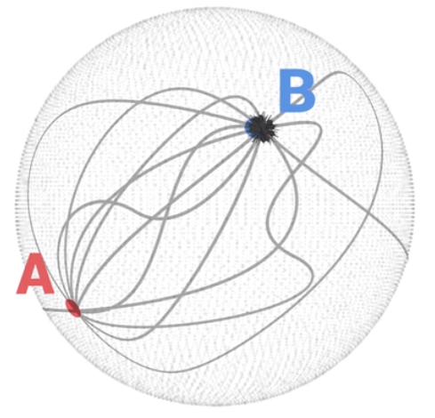
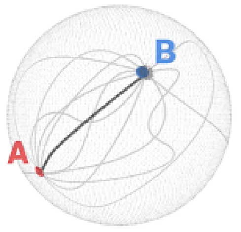

Introduction
La relativité Générale est principalement l’oeuvre d’Albert Einstein élaboré en 1915 étant une amélioration des deux théories précédentes ; La relativité Restreinte (1905 ) et la relativité Galiléenne (XVII ème ) . Cette théorie relativiste de la gravitation consiste à prendre en compte d’impact de corps massifs sur les trajectoires dans notre espace à quatres dimensions qu’on appel espace temps . Cet espace une fois déformé donne lieu à une dilatation de temps . Ce phénomène est la clé pour imaginer un possible voyage dans le temps , nous allons expliquer en quoi elle consiste et comment elle pourrait nous aider pour prendre de l’avance sur notre temps.
Dévelopement
On étudie cette relativité dans un référentiel , ici l'association de référentiels Galiléens ayant en compte les principes de la relativité restreinte ,et en l’associant au principe de chute libre . Ce référentiel est appelé référentiel inerte .
L'arrivée de cette nouvelle vision de la chute libre est le plus plus gros changement en matière de gravitation , qui est un phénomène fondamental de l’univers qui tends à unir les objets entre eux . Il exprime que la chute libre est le mouvement naturel des corps et qu’il n’est plus question de force. On parle alors du principe d'équivalence où les objets tombent tous de la même façon
Ce mouvement naturel de la chute libre se retrouve dans nos chutes par exemple ,ou nous ne sentons notre masse seulement au moment de l’impact car le fait de rester immobile sur la terre n’est autre que de le fait de s’opposer à la chute et avoir une accélération vers le haut. Des études sont alors reproduites sur terre comme par exemple à Brème en allemagne ou une tour permet d'étudier la chutes libre .
Dans l’espace c'est dans la géométrie courbe de notre univers que les corps se déplacent naturellements en chutes libres et suivent les lignes droites ,qui n’est sont plus vraiment car la interviens l’impact des masses environnantes qui coubes l’espace temps ,on y retrouve les planètes , les trous noirs ,le soleil et autres astres imposants . Plus l’astre choisi a une masse importante,plus les trajectoires se courbent .
Se rapport entre la masse et la courbure de l’espace temps a une équation .C’est l'équation d’Einstein ; G=T , ou G est le tenseur d’Einstein représentant la courbure et T le tenseur énergie impulsion plus généralement un regroupement des notions de masse . (les tenseurs sont des objets mathématiques qui se transforme quand les vecteurs de base changent )
Pour contextualiser et mieux comprendre le changement de trajectoire rectiligne à trajectoire courbe on compare les deux dans leurs espace respectifs , dans un espace plat , les parallèles ont toujours la même distance qui les séparent en ne se rejoindront jamais.
Or dans un espace courbe comme la Terre , si deux personne se déplacent dans la même directions de façon tout à fait droite ,ces deux personnes finiront par se retrouver.

Les lignes droites alors devenues des lignes courbes modifie pas la suite l’idée de plus court chemin . C’est la géodésique ,un objet mathématique qui relie deux points avec le chemin le plus court parmis une infinité de chemins possible . Tous les autres chemins ne sont alors pas nécessaire et ils se nomment dans leur ensemble le métrique .


Cependant ce ne sont sont pas les seuls changements car les masse déforme aussi le temps , puisque celui-ci et l’espace sont infiniment liés. Le temps ne s'écoule et n'est pas répartie de la même façon autour de la masse ,plus il,est proche ,plus le temps s'écoulait rapidement . Il faudrait alors s'approcher d’un astre les plus imposant possible afin que celui-ci courbe le plus possible l’espace temps , ce qui nous permettrait ,en suivant la trajectoire de chute libre qui est le chemin le plus prenant alors le moins de temps qu'un trajets initial en ligne droite ,de profiter de la dilatation du temps pour y effectuer un voyage .Un astre pourrait nous permettre de dilater suffisamment le temps ;le trou noir .
Conclusion
On a pu constater que la relativité générale a acquise le principe de chute libre permettant une autre vision que celle proposer par la relativité restreinte . Elle se sert alors de ces nouvelles trajectoires ainsi de de leurs courbure prises lors d'une distribution de masse des corps massif environnants pour profiter de la dilatation du temps qui opère à cet endroit .Cependant il est impossible de la pratiquer et elle ne reste que théorie qui fonctionne au niveau du fonctionnement et des calculs .Il nous ai pour nous impensable de s'approcher si près d’un trou noir sans se faire emporter par celui ci et encore moins en ressortir. Dans la partie suivante nous allons approfondir nos connaissances sur les trou noirs et comprendre pourquoi leurs aide pour notre voyage dans le temps nous ai utile.